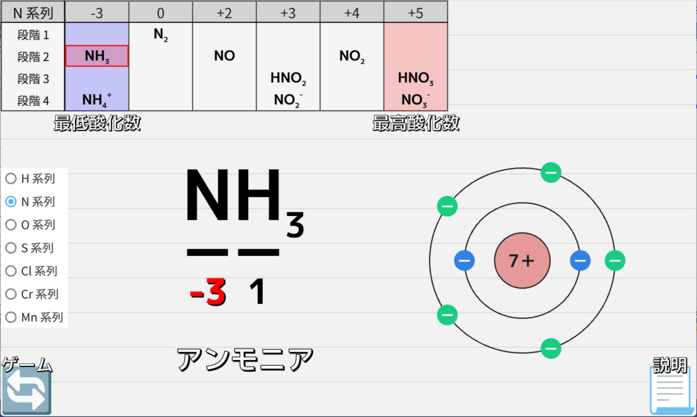
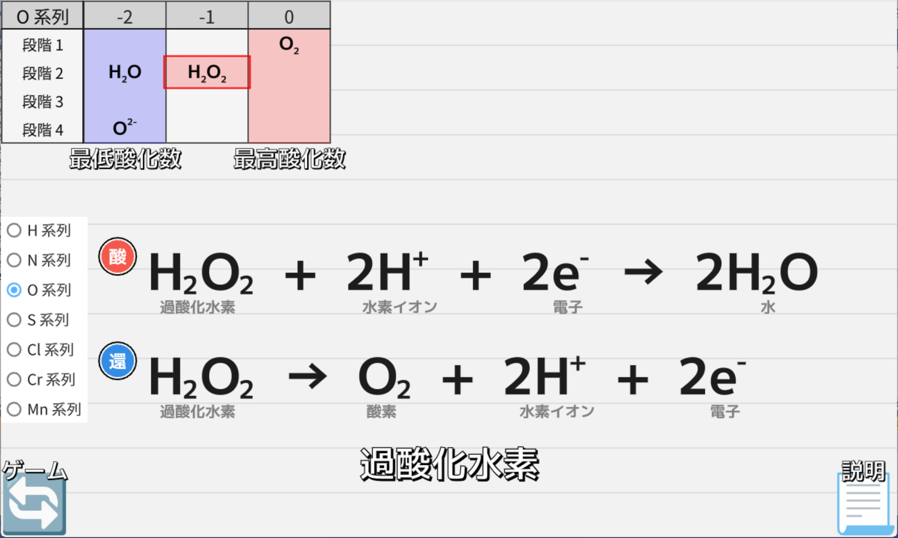
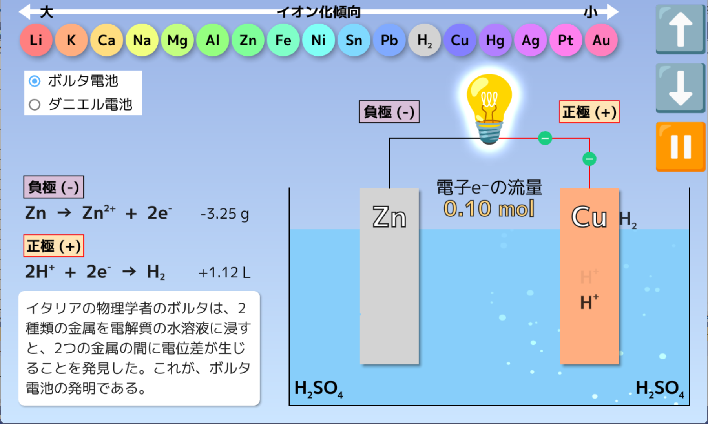
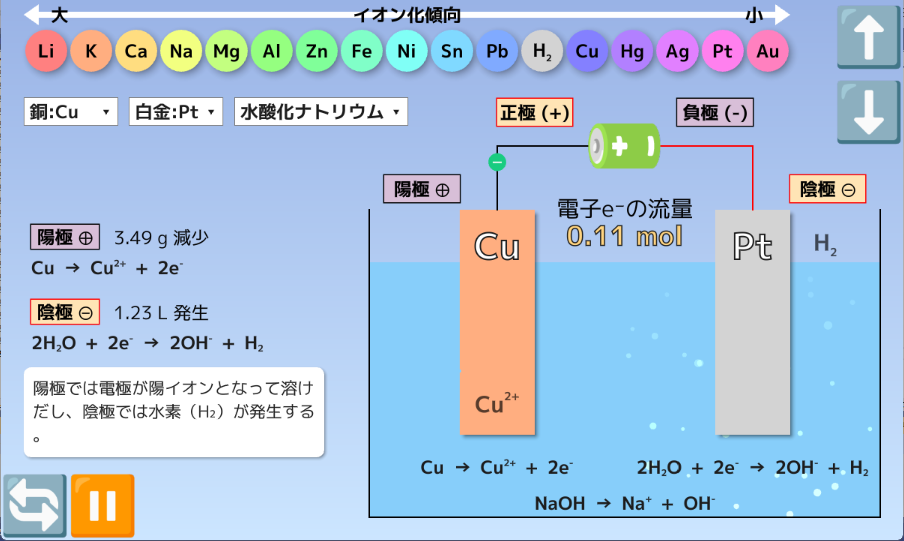

酸化と還元
① 酸化数の計算¶
イオン結晶の1つである塩化ナトリウム（NaCl）では、多数のNa⁺とCl⁻がイオン結合をつくり、規則正しく配列しています。ここで、Na⁺とCl⁻に着目すれば、ナトリウム原子から塩素原子へ電子が1つ受け渡されたことがわかります。
このように、イオン結合でできている物質は、その物質を構成するイオン式を覚えていれば、電子の授受の様子がわかりやすいです。しかし、H₂OやCO₂のように共有結合でできている物質は、一見して電子が「どちらの原子に何個、受け渡されたか」…という電子の授受の様子がわかりにくいです。そこで、原子が電子を何個授受したか明確にするために、酸化数という値が用いられます。

アプリの使い方
- 画面の左上の表は、7つの原子（H、N、O、S、Cl、Cr、Mn）について、酸化数の変化とそれに対応する化合物（とイオン）をまとめたものです
- 表中の化学式をクリックすれば、その物質の化学式が表示され、同時に各原子の酸化数が表示されます
- 📃マークを押せば、その物質の情報が表示されます
- 🔁マークを押せば、ゲームモードに切り替わります。右上のパットで、下線が引かれた原子の酸化数を入力し、🔛マークを押せば、正誤が判定されます
炭素C、窒素N、酸素O、硫黄S、塩素Clなどの原子の酸化数は、化合物の種類によって、ある範囲でさまざまな値を取ります。
たとえば、Nの酸化数は-3～+5となります。その理由は、窒素原子が15族で最外殻電子の数が5個だから、です。つまり、最外殻電子をすべて相手に与えたときが最高酸化数、相手から電子を受け取り、最外殻電子が8個になったときが最低酸化数となります。最高酸化数や最低酸化数を意識すると、その物質が酸化されやすいか還元されやすいか推測することができます。
N原子は15族に属しているから、最外殻電子は5個
最外殻電子5個をすべて相手に与えたということは、電子e⁻を5つ奪われたということだから、最高酸化数は+5
相手から電子3個を受け取り、最外殻電子が8個になったら、最低酸化数は-3
② 酸化剤・還元剤の半反応式¶
ある物質が酸化されて、電子e-を失った場合、必ず別の物質がその電子を受け取ります。このように、酸化と還元は本来同時に起こりますが、その全体の化学反応式を一度に組み立てることは困難です。そのため、酸化剤が電子を受け取ったり、還元剤が電子を放出したりする様子をわかりやすく、分解して表すために、片方だけの反応を示す半反応式を使い、これらを組み合わせて、全体の化学反応式をつくります。
それぞれの反応式の電子の数をそろえて、2つの式を足し合わせることで、複雑な酸化還元反応の式を組み立てることができます。そのため、酸化還元反応の式から、酸化剤・還元剤の量的関係を考えるためには、まずは酸化剤・還元剤の半反応式を書けるようになる必要があります。
アプリの使い方
- 画面の左上の表は、7つの原子（H、N、O、S、Cl、Cr、Mn）について、酸化数の変化とそれに対応する化合物（とイオン）をまとめたものです
- 表中の化学式をクリックすれば、その物質に関係する半反応式が表示されます
- 📃マークを押せば、その物質の情報が表示されます
- 🔁マークを押せば、ゲームモードに切り替わります。半反応式に登場する化学式を反応物と生成物に分類し、電子の数を合わせて、🔛マークを押せば、正誤が判定されます
③ 化学電池¶
酸化還元反応を利用し、化学エネルギーを電気エネルギーとして取り出す装置を、電池（化学電池）といいます。
電池は、電解質の水溶液にイオン化傾向が違う2種類の金属を浸した構造をしています。イオン化傾向が大きい方の金属が負極(-)に、イオン化傾向が小さい方の金属が正極(+)になります。ふつう、負極と正極は導線で結ばれています。負極(-)から流れ出た電子e⁻は、導線を通って、正極(+)へ向かいます。つまり、負極では酸化反応が起こり、正極では還元反応が起こります。
導線の途中に、電球💡など適切な抵抗を接続すれば、電子e⁻が流れるときのエネルギーを取り出し、仕事をさせることができます。つまり、電池とは、自発的な酸化還元反応に伴う化学変化のエネルギーを、電気として取り出す装置といえます。

アプリの使い方
- 画面をクリックすれば、電池の放電が始まり、電球💡が光ります。
- ⬆️⬇️ボタンをクリックすれば、電極を引き上げたりもとに戻したりすることができます。電極が水溶液から離れると、電池の放電が止まります
- 左側のラジオボタンで、1 ボルタ電池とダニエル電池を切り替えることができます
④ 電気分解¶
電気エネルギーによって強制的に酸化還元反応を起こすことを、電気分解といいます。
電池と電気分解は表裏一体の関係にあります。電池は自発的な酸化還元反応から電気エネルギーを取り出しますが、電気分解は逆に電気エネルギーを利用し、強制的に酸化還元反応を起こします。電気分解は電気エネルギーを必要とするため、その供給源として、電池🔋などの電源をつながなければなりません。電源の正極(+)とつないだ電極を、陽極(+)といいます。陽極では酸化反応が起こり、電子e⁻が流れ出ます。電源の負極(-)とつないだ電極を、陰極(-)といいます。陰極では還元反応が起こり、電子e⁻が流れ込みます。

アプリの使い方
- 画面をクリックすれば、電気分解が始まります
- ⬆️⬇️ボタンをクリックすれば、電極を引き上げたりもとに戻したりすることができます。電極が水溶液から離れると、電気分解が止まります
- 3種類のプルダウンは、陽極の種類、陰極の種類、電解質の種類に対応しています。電極や電解質の種類を変えれば、別の化学変化が起こります
電気分解は、イオン化傾向が大きい金属を強制的に還元し、単体として取り出すなど、私たちの生活に欠かせない技術です。
-
ボルタ電池を放電させると、最初は1.1V程度の電圧が出ますが、すぐに電圧がガクンと下がります。この現象を分極といいます。理由はいろいろありますが、代表的なものは、正極(+)で発生した水素H₂の泡が銅板の表面にくっついて、活物質である水素イオンH⁺が銅板に近づけなくなるためです。 ↩